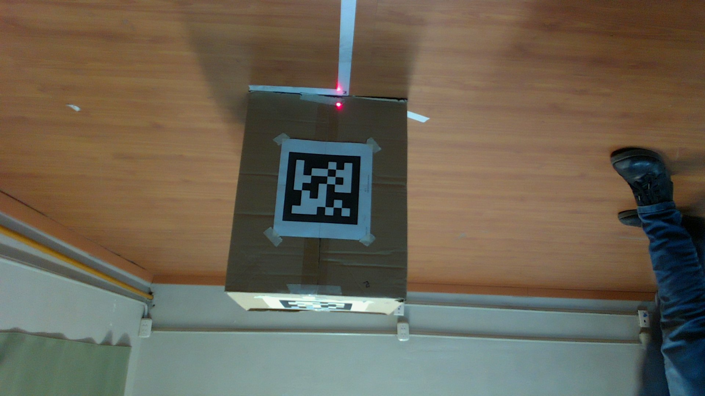
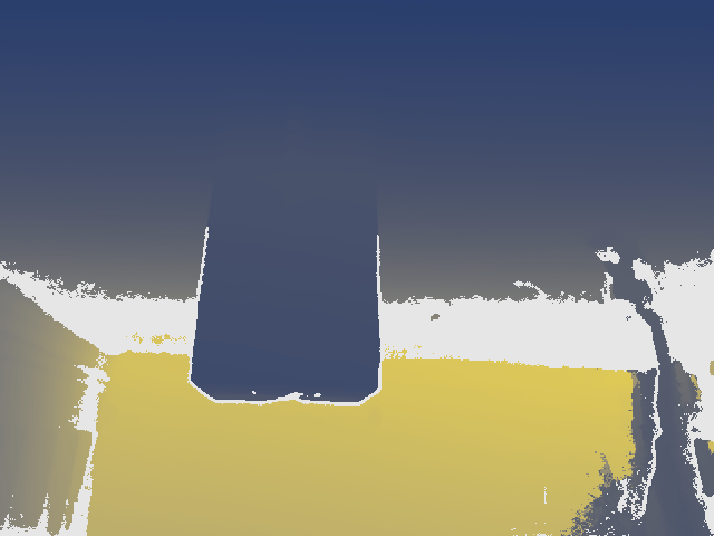
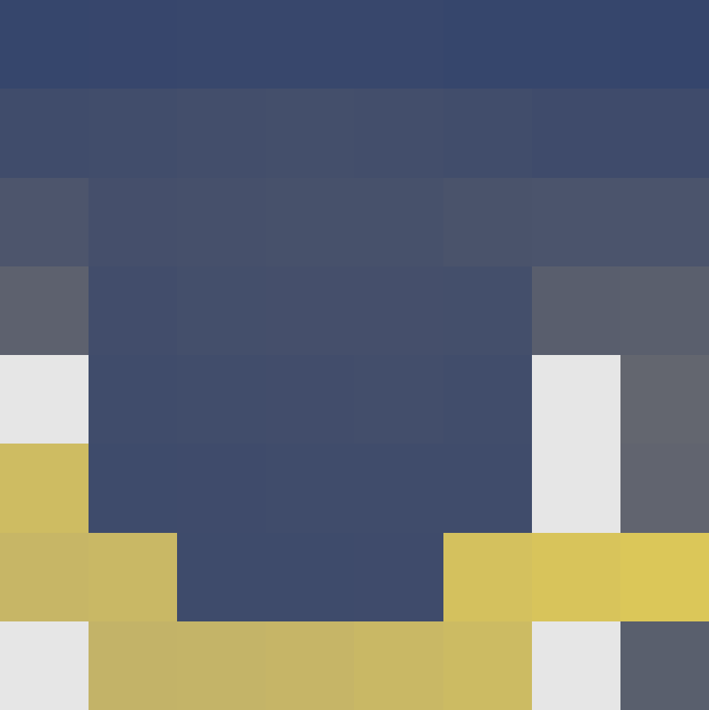
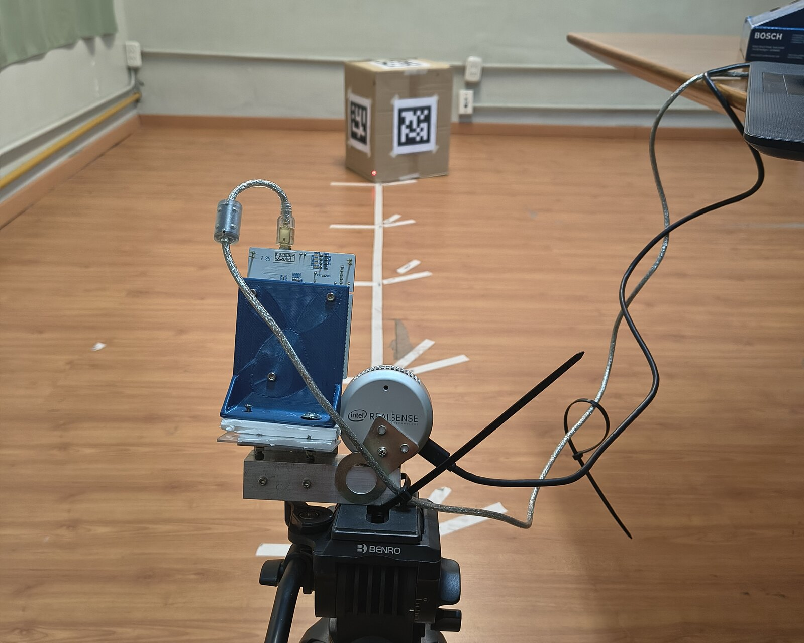
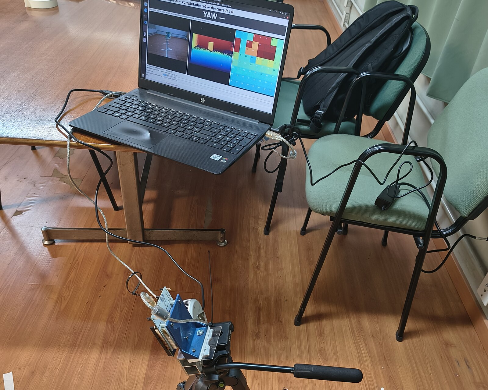
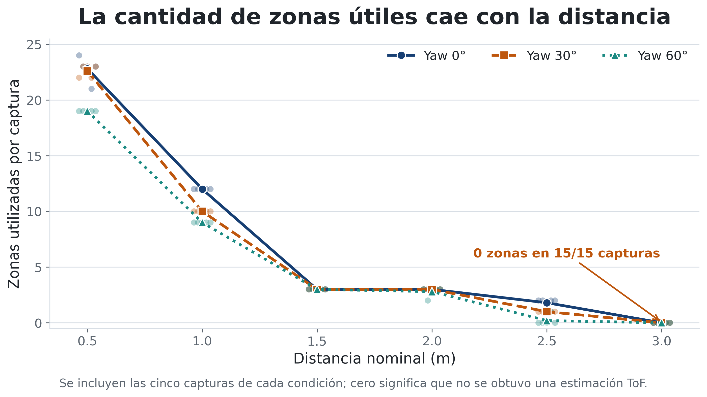

Póster científico · 2026
5tas Jornadas UNIDEF
Evaluación de un sensor ToF multizona para estimar la distancia a cajas en aplicaciones de robótica de interiores
Evaluamos el VL53L5CX de STMicroelectronics en 90 capturas, seis distancias y tres orientaciones. Hasta 2 m produjo una estimación en todas las tomas; más lejos, la cobertura espacial pasó a ser la principal limitación.
Escena experimental
Una caja ocupa sólo una parte del campo visual
El VL53L5CX entrega 64 distancias en un campo aproximado de 45° × 45°. Al alejar la caja, cada zona cubre una región mayor y puede combinar objeto, piso y fondo.

Posiciones ensayadas
0,511,5
22,53 m
Yaw 0°
Yaw 30°
Yaw 60°
6 distancias × 3 yaw × 5 repeticiones = 90 capturas

0 m · cerca1234 m · lejos
Sin dato

0 m · cerca1234 m · lejos
Sin dato
Cómo mide el VL53L5CX
Del tiempo de los fotones a una distancia por zona
El sensor emite luz infrarroja de 940 nm sobre un campo de aproximadamente 45° × 45°. Una matriz de detectores SPAD registra los tiempos de llegada de los fotones reflejados y el procesamiento interno entrega una distancia para cada una de las 64 regiones angulares.
1
EmisiónUn pulso infrarrojo ilumina la escena.
2
DetecciónLos SPAD acumulan retornos a distintos tiempos.
3
DistanciaEl retardo del retorno determina la profundidad.
Tiempo de ida y vueltad = c · Δt / 2
45° / 8 ≈ 5,6° por zona. La huella ideal crece casi 10 cm por cada metro de distancia:
≈ 10 cma 1 m
≈ 20 cma 2 m
≈ 29 cma 3 m
Si una zona abarca caja, piso y fondo, recibe retornos a diferentes tiempos. En esta campaña se configuró un objetivo por zona y orden closest: se informó el pico válido más cercano.
Procesamiento interno por zona
Dos superficies pueden producir dos picos
Cada bin reúne los fotones detectados durante una ventana temporal. Un retorno temprano corresponde a una superficie cercana; otro más tardío puede pertenecer al fondo. La posición del pico determina la distancia y su dispersión contribuye a la sigma informada por el sensor.
Instrumentación
Los dos sensores se montaron sobre una referencia mecánica común
El soporte mantuvo próximos el centro de la cámara RGB de la Intel RealSense L515 y el centro del VL53L5CX. La notebook permitió controlar la captura y observar simultáneamente RGB, profundidad y las 64 zonas ToF.


Método
De la lectura cruda a la distancia comparable
Referencia experimentalDistancia a la primera superficie de la caja
Los tres sistemas se compararon sobre la misma magnitud.
- 1Reconstruir la caja
La nube L515 determina su geometría y las zonas ToF candidatas.
- 2Separar superficies
Se conservan lecturas compatibles con la caja y con ninguna otra superficie.
- 3Agregar en el tiempo
Se obtiene la mediana de 30 cuadros para cada zona.
- 4Estimar la superficie
La mediana entre zonas se proyecta sobre el eje de avance.
172 800 lecturas ToF
348 × 285 × 440 mm caja
Bosch GLM 30-23 referencia
L515 + RGB–ArUco comparación
Resultados interactivos
Error por distancia, orientación y sistema
Seleccione un sistema y un yaw. Cada punto representa una captura y la línea une las medias por distancia. El detalle se actualiza al elegir un punto.
La cantidad de zonas útiles cae con la distancia
Yaw 0°
Yaw 30°
Yaw 60°

A 3 m: 0 zonas útiles en las 15 capturas.
Lectura conjunta
El límite apareció antes en la cobertura que en el error
- Hasta 2 m: estimación en las 60 capturas.
- A 2,5 m: 11 de 15 capturas.
- A 3 m: ninguna captura estimable.
- Al aumentar el yaw creció la dispersión del error.
Conclusión
Información de distancia útil para la fusión sensorial
Resultado principal
El VL53L5CX estimó la primera superficie de la caja con errores del orden del centímetro y cobertura completa hasta 2 m.
Límite observado
Al aumentar la distancia disminuyó la cantidad de zonas cubiertas por la caja; a 3 m no se obtuvo una estimación.
Continuación
Integrar la localización RGB con el ToF de baja resolución y evaluar la fusión en nuevas escenas.
PID UTN HAASEC899
“Fusión de imágenes RGB y sensores de profundidad bajo costo mediante deep learning para la estimación de profundidad en robótica de interiores”. Financiado por la Universidad Tecnológica Nacional. Se agradece a la UTN Facultad Regional Haedo por las instalaciones y el apoyo brindado.